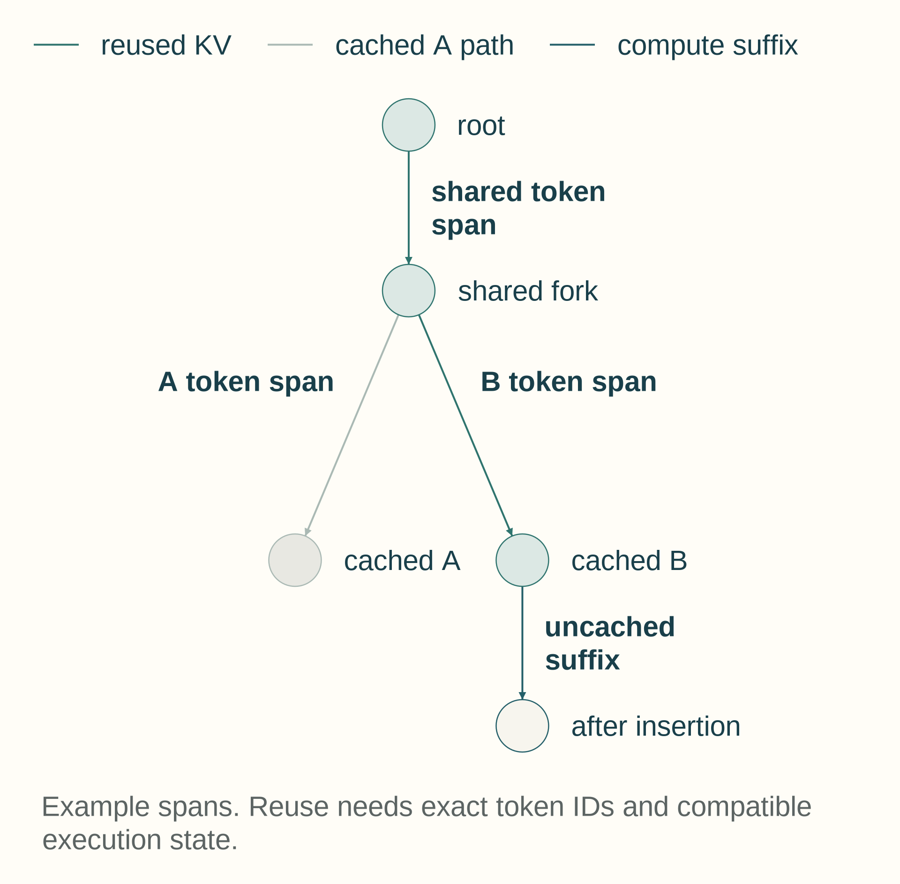

13 Request scheduling and prefix reuse
One worker’s decode loop reads and extends its key-value cache. When many requests arrive together, they compete for GPU time and memory. A serving engine decides which requests can enter, which ones advance together, and where their cache blocks remain. Here, serving engine means the request scheduler and memory manager around model execution. Inference engine is a broader term that can also include model runtimes, compilers, and hardware-specific executors.
Running more requests together can give the GPU more useful work, but waiting to form a batch or running a long prompt can delay other responses. The scheduling choice depends on prompt and output lengths, available cache memory, and the service’s latency targets. Static and continuous batching change how requests share a worker; chunked prefill and separate prefill/decode workers change how prompt work competes with token generation. Any comparison must include waiting, cache capacity, and, when workers are separate, the state-transfer cost.
Requests can repeat a long prompt even when their later answers differ. Recomputing that shared prefix spends GPU time on work already done. Prefix caching can reuse the stored keys and values when the token IDs and the conditions that produced those values match. Finding a matching prefix in the cache, a cache hit, avoids recomputing it. Whether it shortens prompt processing depends on lookup, retrieval and cache-management time compared with the computation it replaces.
A request arrives with token IDs and an output rule. The scheduler may leave it waiting while checking available KV memory and the active batch. Once admitted, prefill processes its prompt, creates the first KV state and selects a first output token. Each later decode step consumes the previous selected token, reads and extends that request’s KV state, and selects another. Completion ends the request’s active ownership of its cache blocks. A block becomes free only when no active request shares it and the prefix cache does not retain it for reuse. A request waiting before prefill holds no newly computed KV state; after prefill it can hold KV memory while waiting between decode steps.
The engine tracks request IDs, token positions, sampling constraints, queue state, admission decisions, and KV block tables that map logical token blocks to physical KV storage (paged cache). Prefix-cache entries record retained KV state that a compatible later request can reuse. This metadata is smaller than the tensor state but can affect launch gaps, queueing and cache correctness.
13.1 From model libraries to serving engines
A model library constructs the tokenizer and model objects, interprets checkpoint configuration, loads weights, and exposes callable forward or generation interfaces. A serving engine uses those components inside a request-processing system that adds admission, shared scheduling, KV-cache block management, worker coordination, streaming, and service metrics.
The same checkpoint can therefore participate in different execution arrangements. Direct model-library calls are useful for controlled baselines and correctness checks. A serving engine adds the control plane needed when many requests compete for memory and GPU time, while still relying on model-library or compiled-runtime components for the model computation itself.
The serving engine has a CPU-side control plane as well as a GPU execution path. The control plane receives API requests, formats inputs, tokenizes text, checks admission constraints, selects batches, allocates or looks up KV blocks, schedules prefill and decode work, and returns streamed tokens. If this scheduler is slow, the GPU can sit idle even when the model kernels are efficient. The following list names CPU-side control-plane responsibilities and the scheduler symptom they can create.
- API formatting: Parse request metadata, sampling settings, adapter selection, schema constraints, and streaming preferences.
- Tokenization: Convert text to token IDs. This is often CPU-side work and contributes to TTFT for short requests.
- Admission control: Decide whether the request can fit under memory, context-length, batch, and SLO constraints.
- KV block lookup/allocation: Find reusable prefix blocks, allocate new blocks, and maintain block tables for active sequences.
- Decode-step scheduling: The scheduler selects which active requests advance on the next GPU step and which prefill chunks can be interleaved.
- CPU control-plane delay: CPU scheduling, tokenization, or block bookkeeping delays the next GPU work, leaving idle gaps between kernels.
vLLM is an open-source serving engine built around continuous batching and paged KV-cache management. Here paged KV-cache management means fixed-size logical KV blocks mapped to noncontiguous physical blocks, following Efficient Memory Management for Large Language Model Serving with PagedAttention1. Its scheduler architecture and multi-step GPU execution (Section 13.2.2) aim to move bookkeeping out of the work repeated for every generated token so the GPU receives fewer idle gaps.
vLLM groups its settings by the object they constrain. Memory and context settings bound cache growth and workspace reserve. Cache-representation settings select a supported KV format. Scheduler settings bound token and request admission. Model-loading settings, including --quantization, choose a weight-quantization backend supported by the selected release. Available backends and defaults are release-specific. Section 13.2.2 gives the scheduler-facing fields, their effects, and the documentation version used here.
A serving configuration is accepted only when admission, cache use, and kernel execution follow the intended path and request-level latency or goodput improves without violating quality or memory limits. Higher GPU utilization alone is not a substitute for the service metric.
These settings control admission and memory budgets. They do not repair a slow attention kernel or an inefficient compiled graph. The next section isolates the batching policy so its effect on request waiting and GPU occupancy can be measured separately.
13.2 Static batching and continuous batching
Batching is the scheduler decision to run multiple requests together so the GPU receives enough work. In autoregressive serving, batching is harder than in ordinary inference because requests generate different numbers of tokens and finish at different times.
- Static batching: Runs a fixed group of requests together until the batch completes.
- Dynamic batching: Briefly waits to collect a fuller launch batch, then runs the launched work mostly as a fixed unit.
- Continuous batching: Updates the active request set at each decode step, also called iteration-level scheduling.
The problem is generation waste. Autoregressive requests finish at different times, and a static batch remains limited by the longest request. Requests that finish early stop doing useful work but can still occupy scheduler and cache capacity until the batch drains. Continuous batching removes finished requests and admits new ones at token-step boundaries, keeping active work packed more tightly. Combining active one-token decode work improves useful work per launch, but each request still advances one token at a time; KV capacity, queue time, and scheduler work can limit the gain.
The cost is scheduler and cache-management complexity. The engine must track which sequences are active, which KV blocks they own, which requests have completed, and which prefill or decode work can be inserted without violating latency targets.
| Dimension | Static batching | Continuous batching |
|---|---|---|
| Admission | Fixed group | Dynamic per step |
| Utilization | Wastes slots after requests finish | Keeps active work packed |
| Latency | Initial formation can wait; finished slots cannot be refilled until the fixed group drains | Can refill slots at token steps; adds scheduler work and may change queue or token latency |
| Cache management | Simpler | Tracks per-request cache state as requests enter and leave; storage can use contiguous regions or paged blocks. |
13.2.1 Batching policies
Which requests can join a GPU step, and when can a released decode slot be refilled without worsening queue time or per-token latency? The three policies below answer that scheduling question differently.
For a fair policy comparison, fix the arrival times, prompt token IDs, output and stopping rules, starting cache state, and observation window. Count every submitted request as completed, rejected, failed, or still unfinished. The short step-count example below shows which slots are occupied; without client arrival and completion timestamps, it cannot establish TTFT, tail latency, or a winning policy. The later serving-measurement chapter gives the full client procedure.
Consider three requests that need 2, 5, and 8 decode steps. A static batch reserves the launched group until the eighth step, so the first two requests leave unused slots after they finish. Dynamic batching can wait briefly before launch to form that group, but it still cannot refill those slots during the run. Continuous batching checks the active set after each decode step: it removes completed requests, admits waiting ones whose KV state fits, and forms the next token-step batch. This recovers slots, but every refill requires scheduler work and KV-block bookkeeping, so the gain must be checked against queue time and TPOT.
13.2.2 CPU-side scheduler architecture and vLLM-style optimizations
A fast GPU worker can still underperform if the CPU control plane cannot feed it. The engine reduces idle gaps between decode steps by moving avoidable CPU work out of the repeated decode step and by scheduling several GPU steps with less round-trip overhead. The examples below show common scheduler goals and the configuration mechanisms used to tune them.
The configuration names below are from vLLM 0.6.4.post1. Later releases can change their defaults or effects.2
- Separated API server: Keeps HTTP/gRPC parsing, authentication, request validation, and streaming protocol work away from the engine’s critical scheduling loop.
- Tokenization before admission: Moves CPU tokenization and deterministic request serialization before admission whenever possible, reducing TTFT variance for short prompts.
- Multi-step scheduling: Schedules several decode iterations ahead so the GPU worker can replay or advance work with fewer CPU scheduler round trips.
- Async output processing: Lets detokenization, sampling post-processing, and streaming callbacks proceed without blocking the next GPU decode step.
- Request formatting discipline: Normalizes sampling settings, adapters, constraints, and prompt fields once, rather than rebuilding them on every iteration.
max_num_batched_tokens: Scheduler-budget field that caps how many total prompt and decode tokens can enter one scheduling step.max_num_seqs: Scheduler-budget field that limits the number of sequences in one iteration.--gpu-memory-utilization: Memory-budget flag setting the GPU-memory fraction limit used to budget model execution, including weights, workspaces, and KV cache. Existing memory use also affects the amount available to the executor.--max-model-len: Context-length flag that constrains worst-case KV-cache growth.--kv-cache-dtype: Cache-precision flag, effective only when supported by the engine and kernels.--enable-prefix-caching: Prefix-cache flag enabling exact-prefix KV reuse when the engine can safely match cached prefixes.
The scheduling mechanisms can reduce idle gaps between useful GPU work without changing an individual model kernel. Memory, context, and cache settings also change capacity or the selected execution path, so their effects differ. A timeline can reveal shorter host-side scheduling regions, fewer CUDA launch gaps, and more regular decode-step cadence.
Token selection in the model workflow (Section 1.1) is also part of every decode step. For each active request, temperature divides logits by a positive scalar. Top-k selects the largest scores, while top-p selects a high-probability set reaching a cumulative probability threshold. The latter two can require selection or sorting over the vocabulary-sized vector, about 128,000 entries for Llama 33. Per-request settings and constraint masks in constrained decoding (Section 14.2) can force separate work for each request. Engines can therefore run selection on the GPU for the whole batch at once. A selection step that returns to Python for each request adds a host round trip to every generated token.
Continuous batching is beneficial only when the extra scheduler and cache bookkeeping costs less than the capacity recovered from completed or stalled requests. Confirm that trade-off with request-level TTFT, TPOT, throughput, and queue-time distributions rather than GPU utilization alone.
13.2.3 Load, concurrency, and queueing
Batching and admission decide how many requests run at once, but the number that are present is set by the traffic. A request that waits longer stays in the system longer. Waiting before admission need not retain KV cache. Waiting after prefill can keep cache resident. Total request concurrency and cache-resident concurrency must therefore be measured separately. Little’s law states the relation for any stable system: the average number of requests in the system equals the average arrival rate times the average time each request spends there, \(L=\lambda W\).4 It holds whatever the arrival pattern or scheduling policy, provided that the relevant long-run averages exist and are finite and describe the same request population and matching entry/exit flow over the same long period.
Here \(L\) is the mean number of requests from the chosen population present in the system, \(\lambda\) is their mean entry rate, and \(W\) is their mean time from entry to exit. If all offered requests are counted, exit includes rejection or cancellation. If only admitted requests are counted, use their matching entry rate, occupancy and time to exit. In the all-complete example below, exit is completion. These means do not establish peak KV-cache use or a safe admission limit.
Example: From arrival rate to KV-cache memory
Inputs: Requests arrive at \(\lambda=10\) per second and spend \(W=4\) seconds in the system on average, from arrival to completion. As an upper bound, assume each request present holds 2,560 tokens of KV cache (a 2,048-token prompt plus 512 generated tokens) at 131,072 bytes per token, the Llama 3 8B shape used in live state and memory (Section 2.1).
Concurrency: \(L=10\times4=40\) requests are present on average, with a mean KV-payload upper estimate of \(40\times2{,}560\times131{,}072\approx13.4\) GB. Queued requests hold no cache yet, and a running request’s cache grows as it generates, so the average is lower. Adding 16 GB of weights leaves room in an 80 GB budget under this average-state estimate. It does not prove that peak cache use, workspaces, and allocator reserve fit.
Doubled traffic: At \(\lambda=20\) per second, suppose the extra load raises queueing so that \(W\) grows to 6 seconds. Then \(L=120\) requests are present on average, giving a mean-payload upper estimate of 40.3 GB. The upper estimate is three times larger. Actual cache use depends on admission and retained lengths.
Conclusion: Latency and memory are coupled through the number of requests in flight. If higher load increases cache-resident concurrency, cache pressure can trigger admission limits or preemption (PagedAttention, Section 12.5), which lengthens waiting further. Capacity planning therefore fixes the arrival rate and the latency target together, then checks that the resulting concurrency fits in memory. Admission queues can instead grow without allocating more KV cache, so peak resident state must be checked separately from Little’s-law averages.
Waiting grows sharply as a server approaches full use. Requests arrive in bursts, and when the server is already busy, each new arrival joins a queue that takes time to drain. Near full utilization, a small increase in load produces a large increase in waiting. Serving systems therefore run below their maximum throughput to protect TTFT and TPOT targets. At that operating point, goodput counts only completed work that meets the latency and quality targets (serving metrics and production traces, Section 15.1). Total throughput and goodput can therefore differ.
13.3 Chunked prefill
Chunked prefill: splits long prompt processing into smaller chunks so one long prompt does not monopolize the GPU. The technique follows Taming Throughput-Latency Tradeoff in LLM Inference with Sarathi-Serve5, which introduces chunked prefills with stall-free schedules that admit new work without pausing ongoing decodes. It improves fairness in mixed workloads and can reduce TTFT for short requests behind long prompts. For example, a large chunk from one 16k-token prompt can keep a short waiting request behind one long GPU interval, while smaller chunks let the scheduler admit that short request between portions of the long prefill. The smaller chunks trade lower blocking for more scheduling overhead because each chunk still pays scheduler and launch work. The chunk size is a control knob: too large increases blocking, too small increases overhead.
The mechanism is scheduling, not a new attention algorithm. A long prompt is broken into several prefill units that can be interleaved with decode work or shorter prompts. This gives the scheduler more opportunities to protect interactive latency.
Chunking changes when prompt work is scheduled, not how much attention work the prompt requires. Its success is therefore measured as a better latency and fairness trade-off under a mixed workload, with any change in total throughput reported separately.
13.4 Separate prefill and decode workers
Prefill and decode compete for the same GPU when they share a worker pool. A long, compute-heavy prefill can then delay the short decode steps that control streaming smoothness. Disaggregation sends the prompt to a prefill worker, which builds the initial KV cache, then transfers that cache plus compatible request state to a decode worker. This phase split follows Splitwise: Efficient Generative LLM Inference Using Phase Splitting6, which places compute-intensive prompt work and memory-intensive token generation on separate resources and pays explicit KV state transfer between them.
The decode pool can run steadier token steps, but the handoff adds routing, KV-transfer, and coordination delay. Use chunked prefill when scheduling within one pool protects decode latency. A fair comparison of shared and separate pools uses the same arrival workload and includes KV transfer and coordination in request timing. The decision depends on whether TTFT, TPOT, end-to-end latency, and goodput meet the service targets. A simple time estimate compares the one-time handoff with total decode delay avoided over the response, not one token interval. Evaluate duplicated model weights separately: they consume memory and hardware capacity in both pools and can make the design too costly or infeasible even when transfer latency is acceptable.
Moving prompt work to another worker changes who owns the KV state and adds a transfer before decode can continue. Exact-prefix reuse asks whether later requests can avoid recomputing some of that state. The next section follows local blocks, tree branches and external cache tiers; each requires compatible token IDs and model execution state. The following decoding chapter then treats how tokens are proposed and accepted. Neither change can be judged from GPU occupancy alone.
13.5 Prefix caching and radix-style reuse
Prefix caching: stores key-value blocks for token prefixes that recur across requests. Radix-style reuse organizes prefixes in a tree so shared prefixes can be found efficiently. The match must be at the token level, not merely string similarity, because the cache represents model-internal attention state.
- Prefix: The initial token sequence shared by one or more requests, such as a system prompt, tool instruction block, retrieval wrapper, or few-shot example.
- Cache hit: A new request starts with a token prefix whose KV blocks are already stored and valid for the same model, tokenizer, adapter, and relevant execution assumptions.
- Radix tree: A tree-like index where common token-prefix paths are shared, allowing the engine to find the longest reusable prefix efficiently.
- Invalidation: The cache entry must not be reused if model weights, adapter state, tokenizer output, positional assumptions, cache format, or prefix tokens differ in a way that changes the stored internal state. Sampling settings matter only when they change the prefix tokens or another state-producing input.
Prefix caching mainly improves TTFT and prefill throughput for repeated-prefix workloads. It does not accelerate unrelated prompts, and it does not reduce the cost of generating new tokens after the shared prefix unless those later tokens also become reusable cached state.
13.5.1 Complete-block identity and cache policy
The reusable unit is a complete KV block. Its lookup key joins that block’s token IDs, its parent-prefix hash, and compatible model and cache identity. The parent hash stops an identical token span at a different prefix position from being treated as the same state. Retention and routing then decide whether the matching block is still available and which worker should serve the request.
- Prefix-addressed KV blocks: The cache stores complete KV blocks for token prefixes and maps future requests to those blocks when the prefix matches exactly.
- Block hashing: A block key is computed from the tokens in a complete block plus identity information such as model, adapter, and relevant cache metadata.
- Parent-prefix hash: The hash of previous complete blocks is included so identical token blocks in different prefix positions are not confused.
- Complete-block reuse: The vLLM full-block policy described here reuses only complete blocks. A partial last block is not available for this reuse until it is filled. Other engines can use different policies.
- Per-block LRU: Least-recently-used eviction can free blocks under memory pressure, but it may evict shared trunks that many future requests would have reused.
- Cache-blind routing: Routes requests without considering existing prefix state. Simpler but can miss expensive reuse opportunities.
- Cache-aware routing: Routes requests toward replicas or workers that already hold useful prefix blocks. Improves reuse but adds routing state and load-balancing complexity.
13.5.2 RadixAttention and SGLang-style reuse
A radix tree stores a shared token prefix once as a trunk and attaches each different continuation as a branch. This reuse follows SGLang: Efficient Execution of Structured Language Model Programs7, which introduces RadixAttention for KV cache reuse across structured program calls. When a request arrives, the engine follows matching token spans to find the longest execution-compatible prefix, reuses the KV state on that path only when token IDs and model execution assumptions match exactly, and inserts only the new suffix.

Block-hashing systems such as vLLM-style prefix caching are simple and effective for exact complete-block reuse. RadixAttention-style systems expose more sequence structure, which helps branchy agents, chat sessions with common trunks, retrieval-augmented generation (RAG), and structured LM programs. The cost is more complex cache metadata and scheduler logic.
Cache validity follows this order before a prefix is reused. The first mismatch ends the reusable prefix and invalidates its later suffix:
Checklist: Prefix-cache validity
- Token IDs: The KV state comes from the token sequence after tokenization. A token-ID mismatch invalidates that position and every later suffix.
- Tokenizer and chat template: Formatting changes can produce different token IDs even when the text looks similar. The comparison uses retokenized IDs rather than raw strings.
- Model weights and adapter state: LoRA adapters, fine-tuned weights, and model revisions change hidden states. Cache entries belong to one model and adapter identity.
- Position and attention assumptions: RoPE scaling, sliding windows, block layout, and cache dtype affect how stored state is interpreted. Reuse requires compatible execution states.
- Mutable system or retrieval context: A retrieval snippet or tool instruction can change across requests. The reusable boundary ends at the first changed token.
Operationally, a cache-friendly prompt places stable content first: system prompts, tool descriptions, policy text, and reusable retrieval context precede dynamic user-specific fields when the product permits it. Timestamps, random IDs, request-specific metadata, and volatile instructions appear later. Deterministic serialization and prefix-cache hit-rate monitoring expose invisible formatting changes that can turn a high-reuse workload into a cache-miss workload.
This layout is useful when chat sessions, retrieval flows, or language-model programs repeatedly fork from the same prompt. The engine must still decide which less recently used branches to evict and whether sending a request to a worker holding its reusable prefix is worth the extra load-balancing work.
13.5.3 LMCache and external KV layers
An external KV layer is a cache tier outside one GPU worker’s HBM. It reuses or preserves expensive prefill results across requests, replicas, or time windows when that worker’s GPU memory is too small or the cached state would otherwise be short-lived.
LMCache is one implementation of an external KV-cache layer. In LMCache: An Efficient KV Cache Layer for Enterprise-Scale LLM Inference8, the authors describe extracting KV cache from paged engines such as vLLM and SGLang and sharing it across queries and engines through CPU, disk, and network tiers.
CPU memory, disk, and remote stores are alternative capacity tiers outside a worker’s HBM. Reads and writes cross the worker/cache boundary, and reuse is valid only for matching model, tokenizer, adapter, cache format, and other state-producing assumptions.
- CPU backend: Higher capacity than HBM and lower latency than disk, but transfer through PCIe or NVLink-C2C-like paths must be amortized.
- Disk or SSD backend: Useful for persistence or very large reuse windows, but too slow for a tight per-token path unless transfers are large and preplanned.
- Remote backend: Can share reuse across replicas, but network transfer and routing decisions can erase the saved prefill cost.
- Invalidation: Cache entries must be tied to model version, tokenizer, adapter, precision, and relevant runtime assumptions.
- Best fit: Long stable prefixes, repeated prompts, multi-replica serving, or workloads where prefill cost dominates transfer cost.
Across local and external tiers, prefix reuse helps only when avoided prefill work exceeds lookup, transfer, invalidation, and placement costs. If a network fetch is slower than local prefix recomputation, an external cache can hurt latency. The next chapter asks whether reducing serial target-model work can improve decode when useful prefixes are unavailable.
References
Kwon, W., Li, Z., Zhuang, S., Sheng, Y., Zheng, L., Yu, C. H., Gonzalez, J. E., Zhang, H., & Stoica, I. (2023). Efficient Memory Management for Large Language Model Serving with PagedAttention. In Proceedings of the 28th Symposium on Operating Systems Principles (SOSP 2023), preprint at PagedAttention paper preprint (DOI), v1 submitted 2023-09-12. Supports PagedAttention paging of KV cache into fixed-size blocks inspired by virtual memory, near-zero waste claim, and sharing within and across requests. Limit: 2 to 4 times throughput gain is measured against FasterTransformer and Orca baselines and varies with sequence length, model size, and decoding method.↩︎
vLLM contributors. (n.d.). Engine Arguments (v0.6.4.post1 documentation). vLLM 0.6.4.post1 Engine Arguments. Defines iteration token and sequence budgets, GPU memory fraction, model context length, cache dtype, and prefix-caching controls. These are version-specific interfaces, not evidence of a speedup. Later releases can change defaults and scheduling behavior.↩︎
Hugging Face. (n.d.). Utilities for generation, TemperatureLogitsWarper, TopKLogitsWarper, and TopPLogitsWarper. Retrieved September 28, 2026, from Transformers generation utilities. Defines distinct temperature, top-k, and top-p transformations. Their kernel implementation and cost depend on the serving runtime.↩︎
Little, J. D. C. (1961). A Proof for the Queuing Formula: L = λW. Operations Research, 9(3), 383-387. Little’s law proof. Source of the relation between the average number in a queuing system, the arrival rate, and the average time in the system. Limit: the relation holds for long-run averages of a stable system and does not predict how waiting time grows with load.↩︎
Agrawal, A., Kedia, N., Panwar, A., Mohan, J., Kwatra, N., Gulavani, B. S., Tumanov, A., & Ramjee, R. (2024). Taming Throughput-Latency Tradeoff in LLM Inference with Sarathi-Serve. In Proceedings of the 18th USENIX Symposium on Operating Systems Design and Implementation (OSDI 2024), preprint at Sarathi-Serve paper preprint (DOI), v1 submitted 2024-03-04. Supports splitting prefill into near-equal chunks and stall-free schedules that add requests without pausing ongoing decodes. Limit: capacity gains reported under tail-latency SLOs for tested models and hardware, including up to 2.6 times for Mistral-7B on one A100.↩︎
Patel, P., Choukse, E., Zhang, C., Shah, A., Goiri, I., Maleki, S., & Bianchini, R. (2024). Splitwise: Efficient Generative LLM Inference Using Phase Splitting. Preprint at Splitwise paper preprint (DOI), v1 submitted 2023-11-30, v2 revised 2024-05-20. Supports placing compute-intensive prompt computation and memory-intensive token generation on separate machines with KV state transfer over fast interconnects. Limit: reported 1.4 times throughput at 20 percent lower cost depends on cluster provisioning and workload split.↩︎
Zheng, L., Yin, L., Xie, Z., Sun, C., Huang, J., Yu, C. H., Cao, S., Kozyrakis, C., Stoica, I., Gonzalez, J. E., Barrett, C., & Sheng, Y. (2024). SGLang: Efficient Execution of Structured Language Model Programs. Preprint at SGLang paper preprint (DOI), v1 submitted 2023-12-12, v2 revised 2024-06-06. Supports RadixAttention organizing cached KV blocks as a radix tree for automatic shared-prefix reuse and compressed finite-state machines for structured decoding. Limit: up to 6.4 times throughput is task dependent across agent, reasoning, JSON, retrieval, and chat workloads.↩︎
Liu, Y., Cheng, Y., Yao, J., An, Y., Chen, X., Feng, S., Huang, Y., Shen, S., Zhang, R., Du, K., & Jiang, J. (2025). LMCache: An Efficient KV Cache Layer for Enterprise-Scale LLM Inference. Preprint at LMCache paper preprint (DOI). Supports extracting KV cache from vLLM and SGLang, storing it across GPU, CPU, disk, and remote tiers, and reusing it across queries plus prefill-decode transfer. Limit: preprint enterprise evaluation reporting up to 15 times throughput on selected multi-round and document workloads, not a universal gain.↩︎